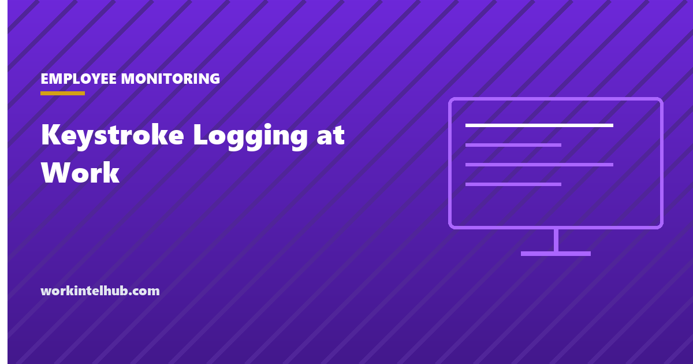

Keystroke Logging at Work

Keystroke logging is software that records what is typed on a computer. In employee monitoring it comes in two forms that share a name and little else. Keystroke counting records how many keys were pressed per minute, as an activity signal, and is a standard feature of most productivity monitoring tools. Keystroke content logging records the keys themselves, which means every password, every personal message and every search, and is the feature that gives the category its reputation. "Bossware", the term that entered general use during the pandemic, mostly means the second.
The checker below reads your setup against the state notice rules and the capture type. The rest of the page covers what each form records, the federal and state law, what employees think about it, and how to configure monitoring so that it is lawful and, separately, so that it is worth having.
Keystroke logging notice checker
A first look at the notice and consent rules, not legal advice. Federal law is the floor; the state where the employee works sets the rest, and content capture on personal devices is the combination most likely to be unlawful.
What it captures: counts versus content
| Keystroke counts | Keystroke content | |
|---|---|---|
| What is stored | Number of key presses per interval, often with mouse activity, as an activity score | The characters typed, sometimes with the window and timestamp |
| What it can show | Whether someone was typing, and roughly how much | What they wrote, including passwords, card numbers, medical and personal messages |
| What it cannot show | What was typed, whether it was work, whether it was any good | Whether it was any good |
| Typical use | Idle detection, activity reports, timesheet validation | Investigations, data loss prevention, covert surveillance |
| Data risk | Low | High: a store of credentials and personal data that must be secured and that a breach exposes |
| Common in | Most productivity monitoring tools | Security and investigation tools; some monitoring products as an optional module |
A third variant, keystroke dynamics, measures typing rhythm to identify or authenticate the user. It is a biometric under Illinois law and similar statutes, with its own consent rules, and is covered below. Our guides to what computer monitoring is and user activity monitoring place keystroke capture among the other things these tools collect, and the software comparison notes which products offer it.
The law: federal floor, state rules
Federally, the Electronic Communications Privacy Act, 18 U.S.C. 2511, prohibits intercepting electronic communications, with two exceptions employers rely on: consent, and the "ordinary course of business" use of the employer's own equipment. Keystroke logging on a company computer with notice and a policy generally falls inside the exceptions; keystroke logging without notice, or on a personal device, or of personal accounts, has produced findings of liability, and a small number of criminal prosecutions where the logging was covert. Penalties under the statute run to $250,000 in fines and five years' imprisonment for wilful violations, plus civil damages.
States add notice requirements and consent rules.
- New York. New York Civil Rights Law 52-c requires prior written notice on hiring, acknowledged by the employee, and a posted notice, for any monitoring of telephone, email or internet use. Penalties of $500, $1,000 and $3,000 for successive violations.
- Connecticut. Connecticut General Statutes 31-48d requires prior written notice of the types of monitoring and a posted notice; from 1 October 2026 the notice must identify monitoring locations and new hires must receive a plain-language statement of what may be monitored. Our Connecticut guide covers the change.
- Delaware. 19 Del. C. 705 requires either a one-time acknowledged notice or a daily electronic notice at login for monitoring of email, internet or telephone use.
- All-party consent states. California, Florida, Illinois, Maryland, Massachusetts, Pennsylvania, Washington and others require every party's consent to intercept a communication. Real-time capture of a message as it is typed has been argued to be interception, which makes content logging of chat and email riskier in those states than counting is.
- Biometrics. Illinois's Biometric Information Privacy Act requires written consent and a public retention policy before collecting a biometric identifier, and typing rhythm used for identification can be one. Texas and Washington have similar statutes with agency rather than private enforcement.
The state-by-state monitoring law guide has the full picture, and the policy template and consent form are the documents the notice rules require.
What employees think, and what it does to them
Pew Research Center asked US adults in 2023 about specific monitoring practices. Fifty-one per cent opposed employers recording what workers do on their computers, and 61 per cent opposed tracking workers' movements; recording keystrokes was not asked separately but sits inside the first figure at its most intrusive end. The site's monitoring statistics page collects the surveys that have asked since; the pattern is consistent, with opposition strongest among the youngest workers.
The behavioural effect is the practical problem. A keystroke count that feeds an activity score rewards typing, and people who are scored on typing type: the mouse-jiggler and the keyboard-tapping script are the products of exactly this measurement. Thinking, reading, a phone call with a customer and a whiteboard session all score zero. A tool that measures activity has to be configured so that the activity is not the target, which usually means the counts are used for idle detection and nothing else, and the line on what is never tracked is written down before the tool is installed.
Configuring it so that it is lawful and useful
- Decide the question first. If it is "are hours accurate", counts plus idle detection answer it. If it is "who leaked the file", that is an investigation with its own process and a security tool, not a workforce-wide keylogger.
- Counts, not content. Switch content capture off at the account level and confirm in writing with the vendor that it is off and cannot be enabled by a manager.
- Company devices only. No agents on personal phones or laptops. Where staff use their own devices, monitoring stops at the company account boundary.
- Exclude what should never be captured. Password fields, personal email and banking sites, health portals, and the lunch break. Most tools support exclusion lists; a tool that does not is the wrong tool.
- Give notice properly. Written, at hire, acknowledged, posted, and specific about what is captured, who can see it, how long it is kept and what decisions it may inform. This is the law in three states and the defence everywhere.
- Restrict access and retention. Named viewers, a short retention period, deletion on schedule, and a log of who looked at what.
- Never use it as the sole basis for a decision. An activity score is a prompt for a conversation. The ethical monitoring playbook sets out the process around it.
Configured this way, keystroke data is a modest signal that a timesheet is roughly right. Configured the other way, it is a store of every password in the company, collected without consent in states that require it, feeding a score that rewards the wrong thing. The difference is settings, and the settings are decided before installation or not at all.
Key takeaways
- Keystroke counting records how much was typed; keystroke content logging records what. The first is an activity signal, the second is a store of passwords and personal data.
- Federal law permits monitoring on company systems with notice and a business purpose. Covert logging, personal devices and personal accounts are where liability starts.
- New York, Connecticut and Delaware require written notice by statute; all-party consent states make real-time content capture riskier; Illinois treats typing rhythm as a biometric.
- About half of US adults oppose recording what workers do on their computers, and activity scores based on typing reward typing, not work.
- Configure for counts not content, company devices only, exclusion lists, acknowledged notice, restricted access and short retention.
- Never make a decision on an activity score alone.
Frequently asked questions
Is keystroke logging legal in the United States?
On company-owned devices, with notice and a legitimate business purpose, generally yes under federal law. New York, Connecticut and Delaware require written notice by statute, all-party consent states raise the risk of capturing message content in real time, and Illinois requires written consent for typing-rhythm biometrics. Covert logging, logging on personal devices and capture of personal accounts have produced civil and, occasionally, criminal liability.
Can my employer see what I type?
If the employer has installed keystroke content logging on a company device, yes, including passwords and personal messages typed on it, subject to any exclusions the tool applies. Most productivity monitoring tools record keystroke counts rather than content. In New York, Connecticut and Delaware the employer must have told you in writing; elsewhere the policy should say what is captured.
What is the difference between keystroke logging and keystroke counting?
Counting records the number of key presses per interval as an activity measure and is common in monitoring tools. Logging records the characters typed, which captures credentials and personal content. Counting carries low data risk and little legal exposure with notice; content logging carries both.
Do employers have to tell employees about keystroke logging?
By statute in New York (written notice at hire, acknowledged and posted), Connecticut (written notice of the types of monitoring, posted, with additional requirements from October 2026) and Delaware (acknowledged notice or daily electronic notice). Everywhere else, notice is the practical basis for the consent and business-use defences under federal law, and covert logging removes it.
Is keystroke logging a biometric?
Keystroke content and counts are not. Keystroke dynamics, the measurement of typing rhythm to identify or authenticate a person, is a biometric identifier under the Illinois Biometric Information Privacy Act and similar laws in Texas and Washington, which require written consent and a retention policy before collection.
Does keystroke logging improve productivity?
Not on the evidence. Keystroke counts measure typing, and people scored on typing produce typing; reading, thinking and conversations score zero. Used for idle detection alongside output measures it is a minor validation signal. Used as a productivity score it distorts behaviour and, in surveys, damages trust.